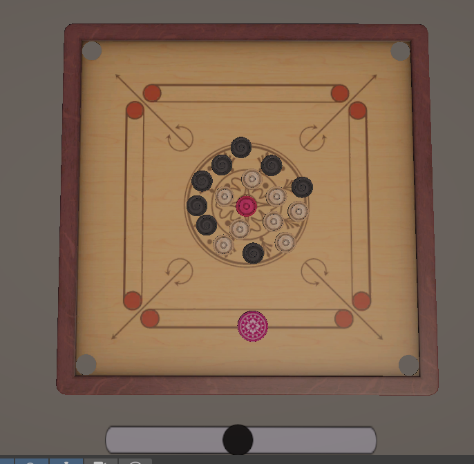

About the Game
This game is a digital recreation of Carrom, the iconic tabletop game rooted in South Asian tradition. It belongs to the category of casual, turn-based, skill-driven board games, where precision and strategy take center stage.
Currently, the game supports a Singles Mode (1 vs 1) where two players can enjoy a friendly match. It’s easy to pick up, fun to play, and brings the feel of a real Carrom board to your screen.
Key Features
- 1v1 Free Play Mode
- Smooth drag-and-shoot controls
- Realistic physics engine
- Designed for all age groups
Screenshots
This screenshot shows the game’s coins and Carrom board assets.
Meet the Creator
This game was developed by Prashanna Sigdel as a school project using Unity Engine and C# scripting.
It's a simple, fun tribute to a timeless game—easy to play and hard to put down!